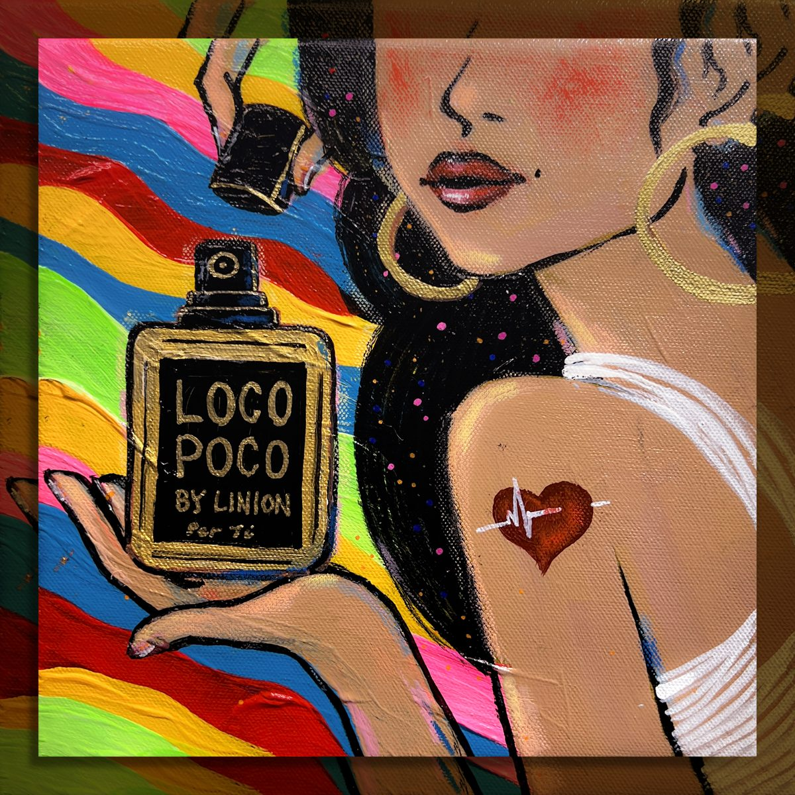
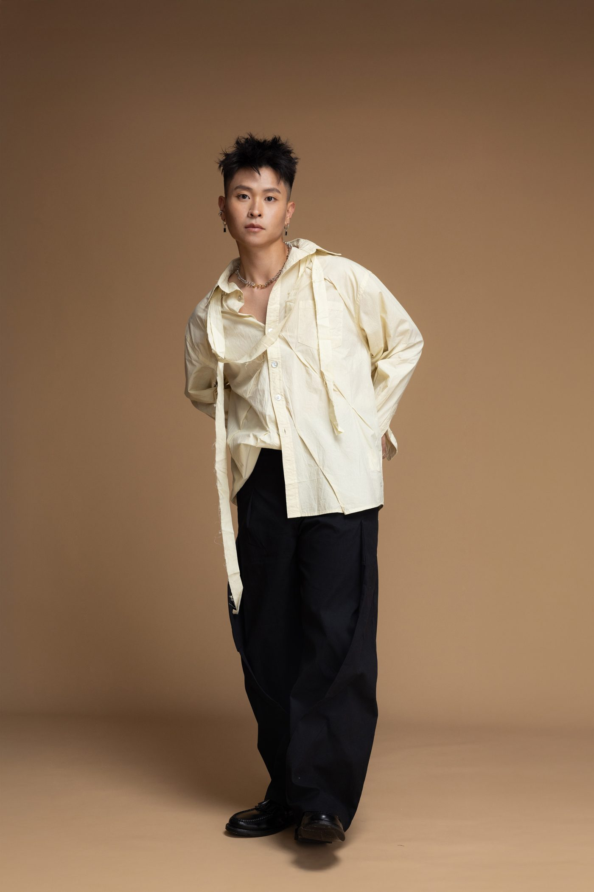
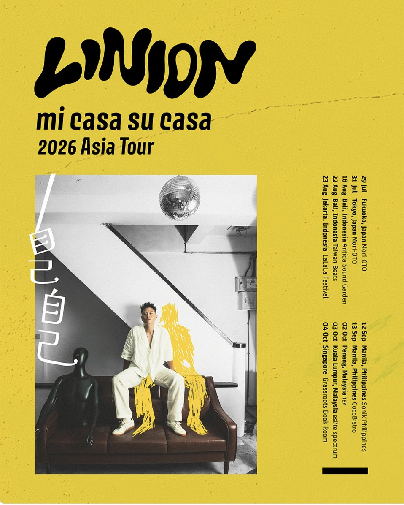

單曲〈LOCO POCO〉
LINION 與阿根廷製作人 MUSA 明馬丁共同創作的拉丁搖擺單曲〈LOCO POCO〉，於 8 月 14 日全球數位發行。歌名取自西班牙文「有一點點瘋狂」，把 LINION 擅長的 R&B 融合拉丁音樂的熱烈身體感，再嵌入台灣聽眾熟悉的 cha cha 律動，歌詞穿梭於西班牙文、英文、中文與台語之間。
負責單曲宣傳策略、新聞稿撰寫與發布、數位行銷規劃，以「為身體而生的歌」與「拉丁 × 台式 cha cha」的跨文化反差作為溝通主軸，串起封面設計（藝術家 OK Liao 廖好）、合作製作人與創作幕後故事，讓單曲在發行期有清楚好記的話題切角。


2026 海外巡演
LINION 第一次亞洲巡演《mi casa su casa 2026 Asia Tour》，以專輯《自己自己 mi casa su casa》為名，從 7 月底一路走過日本、印尼、菲律賓、馬來西亞到新加坡，共十站，其中包括雅加達 LaLaLa Festival 與馬尼拉 Sonik Philippines。回到台灣後預計參與北流 JAM JAM ASIA 亞洲音樂節，作為〈LOCO POCO〉在台灣的首演，MUSA 明馬丁也將同台。

- 07.29 日本 福岡Mori-OTO
- 07.31 日本 東京Mori-OTO
- 08.18 印尼 峇里島Antida Sound Garden
- 08.22 印尼 峇里島Taiwan Beats
- 08.23 印尼 雅加達LaLaLa Festival
- 09.12 菲律賓 馬尼拉Sonik Philippines
- 09.13 菲律賓 馬尼拉CocoBistro
- 10.02 馬來西亞 檳城TBA
- 10.03 馬來西亞 吉隆坡eslite spectrum
- 10.04 新加坡Grassroots Book Room
巡演期間持續規劃社群內容與數位宣傳，把海外演出的現場能量帶回台灣樂迷的視野。
短影音企劃
宣傳影片皆與 LINION 一起討論策劃發想，並負責其他社群平台的短影音剪輯與經營，讓同一支內容在不同平台都有適合的節奏與切角。
← 回到精選案例